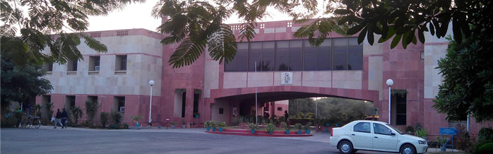
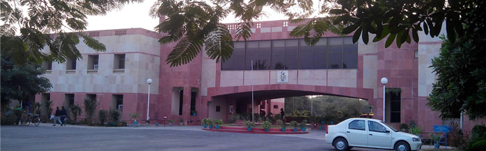

Home

Technically Sponsered by
IEEE MP Sub Section

Computational Intelligence Society Chapter, IEEE UP Section

IEEE UP Section

International Advisory Committee
| Vivek Agrawal, IIT Bombay, India | I. K. Bhat, Director, MNIT Jaipur, India | Raj Bhatnagar, University of Cincinnati, USA |
| P. Chakrabarti, Director, MNNIT Allahabad, India | Vinod Chandran, QUT Brisbane , Australia | B. B. Chaudhary, ISI Kolkata, India |
| N. S. Chaudhary, VNIT Nagpur, India | S. Dandapat, IIT Guwahati, India | Atilla Elci, Aksaray University, Turkey |
| Phalguni Gupta , IIT Kanpur ,India | Lawrence Jenkins, IISc Bangalore, India | Prem K Kalra, Director, DEI Agra, India |
| Vinay Pathak, VC, VOU Kota, India | Vincenzo Piuri, Università degli Studi di Milano, Italy | Bhim Singh, IIT Delhi, India |
| S. N. Singh, IIT Kanpur, India | Gulab Singh, MNNIT Allahabad, India | Mark Zwolinski, University of Southampton, UK |
| Mukesh Mohania, IBM, India | Y. N. Singh, IIT Kanpur, India | D Thukaram, IISc. Bangalore, India |
| Fred Harris, SDSU, San Diego, USA | P. S. Nagendra Rao, IISc Bangalore, India | Kewal K. Saluja, University of Wisconsin-Madison, WI, USA |
| Bharat Bhargav, Purdue University, Indiana, USA | Saman K. Halgamuge, University of Melbourne, Australia | Bhargab B. Bhattacharya, I. S. I. Kilkata, India |
| S. K. Pal, I.S.I. Kolkata, India | Jaidip Srivastava, University of Minnesota, USA | Chris Mitchell, University of London, Surrey, UK |
International Technical Program Committee
| Pawanesh Abrol, University of Jammu, Jammu ,India | Suneeta Agarwal, MNNIT Allahabad, India | Rohit Agrawal, GLA University, Mathura, India |
| Amir Ahmad, University Saudi Arabia | Bulusu Anand, IIT Roorkee, Roorkee, India | Karm Veer Arya, ABV-IIITM Gwalior, India |
| Lalit K Awasthi, NIT Hamirpur, India | Prabodh Bajpai, IIT Kharagpur, India | Usha Banerjee, IIT Roorkee, Roorkee, India |
| Jagdish Chand Bansal, ABV-Indian Institute of Information Technology and Managemment, Gwalior, India | Matadeen Bansal, PDPM-IIITDM, Jabalpur, India | Laxmidhar Behera, IIT Kanpur, Kanpur, India |
| Padmalochan Bera, IIT Bhuvneshwar , India | Harvendra Bhadauria, HNB Engineering College, Pauri, India | Rohit Bhakar, University of Bath |
| Prashant Bhardwaj, NIT Agartala, India | Charul Bhatnagar, GLA University, Mathura, India | Mahua Bhattacharya, ABV-IIITM, Gwalior, India |
| Arupratan Bhowmik, NIT Agartala, India | David Chadwick, University of Kent UK | C Chakraborty, IIT Kharagpur, India |
| Goutam Chakraborty, INL Japan | Aniruddha Chandra, MNNIT Allahabad, India | Chakradhar Chandupatla, IIT Roper, Roper, India |
| Saurabh Chaudhury, NIT Silchar, India | Yogesh Chauhan, IIT Kanpur, Kanpur, India | Naveen Chauhan ,NIT Hamirpur, India |
| Morshedu.Chowdhury, Deakin University Malbourne Australia, India | Udaya Dampage, KDU Srilanka | Ajai Daniel, MMUT Gorakhpur, India |
| Shyama Das, IIT Kanpur, Kanpur, India | Bijoykrishna Das, IIT Madras, Chennai, India | Debapriya Das, IIT Kharagpur,India |
| Sudeb Dasgupta, IIT Roorkee, Roorkee, India | Arnab Datta, IIT Roorkee, Roorkee, India | Mala De, NIT Patna, India |
| Alokkanti Deb, IIT Kharagpur, India | Kusum Deep, IIT Roorkee, Roorkeev | Vivek Deshpande, MIT colleage of Engineering, India |
| Joydip Dhar, ABV-IIITM, Gwalior, India | Amit Dhawan, MNNIT Allhabad, India | M. S. Dinesh, GE healt care, India |
| Maheshi Dissanayake, University of Peradeniya Srilanka | Alpana Dubey, ABB Bangalore, India | Tyrone Fernando , University of West Australia, Australia |
| Manoj Fozdar, MNIT Jaipur, India | Manoj Gaur, MNIT Jaipur, India | Debashis Ghosh ,IIT Roorkee, Roorkee, India |
| Dibyendu Ghoshal, NIT Agartala, India | Anup Girdhar, Sedulity Groups, New Delhi, India | Wilfred Godfrey, ABV-IIITM Gwalior, India |
| Lalitkumar Goel, NTU Singapore | Rajesh Gupta, MNNIT Allahabad, India | Atul Gupta, PDPM-IIITDM, Jabalpur, India |
| Mahendra Gupta, MNIT Bhopal, India | Nitin Gupta, NIT Jaipur, India | Atul Gupta, PDPM-IIITDM, Jabalpur, India |
| Sandesh Gupta, UIET, CSJM University Kanpur, India | Ruchir Gupta, PDPM-IIITDM, Jabalpur, India | Gaurav Harit, IIT Jodhpur, Jodhpur, India |
| Leandros Indrusiak, York University, UK | Sudarshan Iyengar, IIT Roper, Roper, India | Makarand Jadhav, Sinhgad Engineering College, Sinhgad, India |
| RS Jadon, MITS Gwalior, India | Shailendra Jain, MANIT Bhopal, India | RC Jain, JP University Noida , India |
| Renu Jain, UIET, CSJM University Kanpur, India | Anand Jalal, GLA University, Mathura, India | RK Jarial, NIT Hamirpur, India |
| Ravi Jatoth, NIT Warangal, India | Bhavana Jharia, GEC Ujjain, India | Amit Joshi, MNIT Jaipur, India |
| Mohammad Kaifi, MNNIT Allahabad,India | Binod Kanaujia, AIT Delhi, India | Haranath Kar, MNNIT Allahabadv, India |
| Rajib Kar, NIT Durgapur, India | Nirmalya Kar, NIT Agartala, India | Indrani Kar, IIT Guwahati, India |
| P. Karu, MNNIT Allahabad, India | Arti Kashyap, IIT Mundi, India | Sumant Katiyal, DAV Indore, India |
| Nafisuddin Khan, JIT Guna, India | Nafisuddin Khan, JIT Guna, India | Nitin Khanna, Graphic Era University, Dehradun, India |
| Pritee Khanna, PDPM-IIITDM, Jabalpur, India | Nilay Khare, MANIT Bhopal, India | N K Kishore, IIT Kharagpur, India |
| Praveen Kondekar, PDPM-IIITDM, Jabalpur, India | Vijayakumar Krishnasamy, MNIT Jaipur, India | Vishal Kumar, IIT Roorkee, Roorkee, India |
| R Kumar,MNIT Jaipur, India | Sandeep Kumar, IIT Roorkee,Roorkee India | Deepak Kumar, MNNIT Allahabad, India |
| Basant Kumar, MNNIT Allahabad, India | Atul Kumar, ABB Bangalore, India | Ajay Kumar, ABV-IIITM, Gwalior, India |
| Prasanta Kundu, NIT Surat, India | Ashwani Kush, Kurushetra University, India | Dharmendra Kushwah, MNNIT Allahabad, India |
| Vijay Laxmi, MNIT Jaipur, India | Kithsiri Liyanage, University of Peradeniya, Sri Lanka | Makarand Lokhande, PDDP University, Gandhinagar, India |
| Rajib Mall, IIT Kharagpur, India | Durbadal Mandal, NIT Durgapur, India | Deepak Mishra, IIST Trivendrum , India |
| Rakesh Mishra ,IIT-BHU, Varanasi, India | Krishnakumar Mishra, MNNIT Allahabad, India | Pabitra Mitra, IIT Kharagpur, India |
| Namita Mittal, MNIT jaipur, India | BM Mohan, IIT Kharagpur , India | Aniban Mukherjee, IIT Kharagpur, India |
| Ravibabu Mulaveesala, IIT Roper, Roper, India | Subrahmanyam Murala, IIT Roper, Roper, India | Nareshkumar Nagwani, NIT Raipur, India |
| Nagarjuna Nallam, IIT Guwahati, India | Gc Nandi, IIIT Allahabd, India | Ravinder Nath, NIT Hamirpur, India |
| Atul Negi, Central University, Hyderabad, India | Anoop Nmaboodiri, IIIT Allahabd, India | Rambilas Pachori, IIT Indore |
| Tandra Pal, NIT Durgapur, India | Umapada Pal, ISI Kolkata , India | Rajesh Pandey, PDPM-IIITDM, Jabalpur, India |
| Kumars Pandey, SVNIT Surat, India | Jeetendra Pandey, UOU, Haldwani, India | Prabhat Patel, JEC Jabalpur, India |
| Ripon Patgiri, NIT Silchar, India | Umesh Pati, NIT Rourkela, India | B. M. Patil, MIT, Pune, India |
| GA Patil, D Y Patil Institute of Technology, India | KK Patnaik, ABV-IIITM, Gwalior, India | Sourav Patra, IIIT Kharagpur, India |
| Tushar Pattanaik, D-DAC, Noida, India | Manish Pattanaik, ABV-IIITM, Gwalior, India | Chellapilla Patvardhan, DEI Agra, India |
| Sk Peddoju, IIT Roorkee, Roorkee, India | Emmanuel Pilli, NIT Jaipur, India | Pyari Pradhan, IIT Roorkee, Roorkee, India |
| Surya Prakash, IIT Indore, India | Arka Prokash, MNIT Jaipur , India | Balwinder Raj, NIT Jalandhar, India |
| S S Rajput NPL, India | Muttukrishnan, Rajrajan City University, London, UK | Ps Rana, IIT Delhi, New Delhi, India |
| RS Yadav, MNNIT Allahabad , India | Udaipratap Rao, NIT Surat, India | Akshay Rathore, NUS, Singapore, India |
| Meenakshi Rawat, IIT Roorkee, Roorkee, India | Vinay Rishiwal, MJP Rohilkhand University, Bareilly, India | Nirmal Roberts, ABV-IIITM, Gwalior, India |
| A Routray,IIT Kharagpur, India | Sumantra Roy, IIT Delhi, New Delhi, India | Ranjit Roy, SVNIT Surat , India |
| Partha Roy, IIT Roorkee, India | Sudip Roy, IIT Roorkee, Roorkee, India | Pravas Sahu, IIT Guwahati , India |
| Prasant Sahu, IIT Bhubaneswar, India | Goutam Sanyal, NIT Durgapur, India | Vijaya Saradhi,IIT Guwahati, India |
| Mukesh Saraswat, JP Noida , India | R Sarathi, IIT Madras , India | Siva Sarma,NIT Warangal, India |
| Narasimha Sarma, NIT Warangal, India | Ashok Saxena, IIT Roorkee, Roorkee, India | Indraneel Sen, IISc Bangalore, India |
| Amit Sethi, IIT Guwahati, India | Udai Shankar, MMUT Gorakhpur, India | Ravi Shanker , India |
| Harish Sharma, MVOU Kota, India | Satish Sharma, SDSU, San Diego, USA | Ashwani Sharma, NIT Kurushetra, India |
| Poonam Sharma, MITS Gwalior, India | Dilip Sharma, GLA University, Mathura, India | Debdoot Sheet, IIT Kharagpur, India |
| Chandra Shekhar, EPFL Lausanne, Switzerland | Anurag Shrivastav, ABV-IIITM, Gwalior, India | Pankaj Shrivastav, ABV-IIITM, Gwalior, India |
| Kk Shukla, IIT-BHU, Varanasi, India | Anshuman Shukla, IIT Bombay, Mumbai, India | Anupam Shukla, ABV-IIITM, Gwalior, India |
| Richa Singh, IIIT Delhi, India | Pushpendra Singh, IIIT Delhi, India | Virendra Singh, IIT Bombay, Mumbai, India |
| Sanjay Singh, IIT-BHU, Varanasi, India | Dharmendra Singh, IIT Roorkee , India | G K Singh, IIT Roorkee, Roorkee, India |
| S P Singh, IIT Roorkee, Roorkee, India | Raghuraj Singh, HBTI Kanpur, India | Yogendra Singh, IET Lucknow , India |
| Vrijendra Singh, IIIT Allahabad, India | Dushyant Singh, MNNIT Allahabad, India | Anil Singh, MNNIT Allahabad , India |
| Ravindra Singh, MNNIT Allahabad, India | MP Singh, NIT Patna, India | Pradeep Singh, NIT Raipur, India |
| Pramod Singh, ABV - Indian Institute of Information Technology and Management Gwalior, India | Manu Singh, RR Ambedkar University, Agra, India | Dharmendra Singh, IIT Roorkee, Roorkee, India |
| Jyoti Singhai, MANIT Bhopal, India | Nidul Sinha, NIT Silchar , India | Shashi Sinha, GLA University, Mathura, India |
| Dilipsingh Sisodia, NIT Raurkela, India | Ajay Somkuwar, MANIT Bhopal, India | Ajay Somkuwar, MANIT Bhopal, India |
| Vinay Srivastava, MNNIT Allahabad, India | M Sydulu, NIT Warangal, India | S. Tapaswi, ABV-IIITM, Gwalior, India |
| Ritu Tiwari, ABV-IIITM Gwalior, India | GS Tomar, MIR Lab Gwalior , India | Vinod Yadava, MNNIT Allahabad, India |
| Durga Toshniwal, IIT Roorkee, Roorkee, India | Anil Tripathi, IIT-BHU, Varanasi, India | Shweta Tripathi, NIT Patna, India |
| Somanath Tripathy, IIT Patna, India | Munesh Trivedi, ABES Ghaziabad, India | Aditya Trivedi, ABV-IIITM, Gwalior, India |
| Gaurav Trivedi, IIT Guwahati, India | Neeraj Tyagi, MNNIT Allahabad , India | Barjeev Tyagi, IIT Roorkee, Roorkee, India |
| Ry Udayakumar, NIT Surathkal, India | Shirshu Varma, IIT Allahabad, India | Mayank Vats, IIIT Delhi , India |
| M. Veerachary, IIT Delhi, New Delhi, India | Nishchal Verma, IIT Kanpur, Kanpur, India | Vivek Verma, PDPM-IIITDM, Jabalpur, India |
| Shekhar Verma, IIIT Allahabad, India | JV Wijayakulasooriya, University of Peradeniya, Sri Lanka | Jianzhong Wu Cardiff University |
| Ramnarayan Yadav, MANIT Bhopal, India | ||
International Organizing Committee
| Patron | S. G. Deshmukh, ABV IIITM, India | |
| General Chairs | K. V. Arya, ABV IIITM, India | |
| Sunil Kumar, San Diego State University, USA | ||
| General Co-chairs | Lilantha Samaranayake, University of Perideniya, Sri Lanka | |
| N. K. Kishore, IIT Kharaghpur, India | ||
| Rajeev Gupta, IBM, India | ||
| Technical Program Chairs | G. K. Sharma, ABV IIITM, India | |
| Nomesh Bolia, IIT Delhi, India | ||
| Tutorial Chairs | Joydip Dhar, ABV IIITM, India | |
| Atul Kumar, ABB, Bangalore, India | ||
| Publication Chairs | J. C. Bansal, ABV IIITM, India | |
| Tyrone Fernando, University of West Australia, Australia | ||
| Finance Chair | Aditya Trivedi, ABV IIITM, India | |
| Publicity Chairs | Ajay Kumar, ABV IIITM, India | |
| Vinay Rishiwal, MJPRU, Bareilly, India | ||
| Kithsiri M. Liyanage, University of Perideniya, Sri Lanka | ||
| Muttukrishnan Rajarajan, City University, London, UK | ||
| Munesh C. Trivedi, IEEE UP Section, India | ||
| Dilip Sharma, IEEE UP Section, India | ||
| Local Organising Chairs | Anupam Shukla, ABV IIITM, India | |
| Wilfred Godfrey, ABV IIITM, India | ||
| Anurag Srivastav, ABV IIITM, India | ||
| Ritu Tiwari, ABV IIITM, India | ||
| Mahua Bhattacharya, ABV IIITM, India | ||
| S. Tapaswi, ABV IIITM, India | ||
| K. K. Pattanaik, ABV IIITM, India | ||
| Manisha Pattanaik, ABV IIITM, India | ||
| Operation Chairs | Pankaj Srivastav, ABV IIITM, India | |
| Sandesh Gupta, Chhatrapati Shahu Ji Maharaj University, Kanpur | ||
| Vivek Singh Verma, IIITDM, Jabalpur, India |